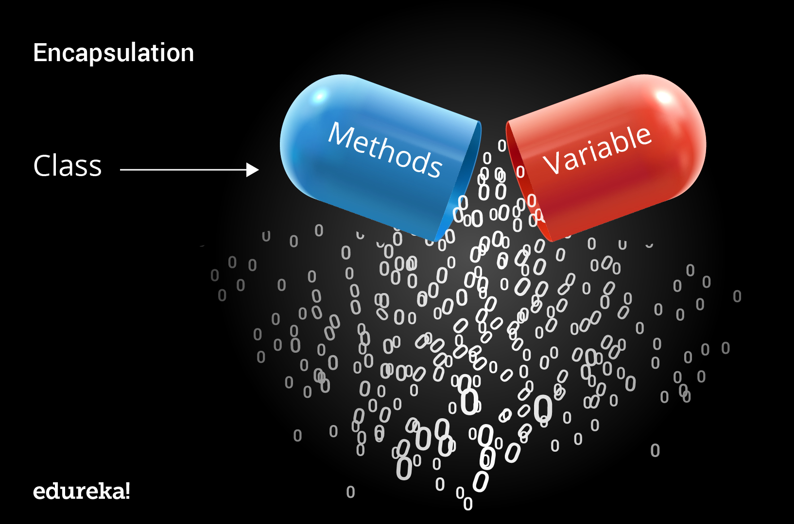

## Classes - Part 1 </br> #### Key topics for tonight <div style="text-align: left;"> - High level overview of classes </br> - Anatomy of a class </br> - Instantiating an object from a class </br> - Combining it all with code examples </div> --- ## Intro to Classes #### Big Ideas - Classes are an organizational tool in our code to create templates for what we expect our <span style="color: cadetblue;">objects</span> to contain. - Classes are meant to <span style="color: cadetblue;">encapsulate</span> related programming responsibilities. - These concepts are all part of something we call <span style="color: cadetblue;">object oriented programming</span>. --- ## Intro to Classes (cont) #### Encapsulation  <div class="fragment" style="text-align: left;"> The bundling of data with methods that operate on that data </div> --- ## Intro to Classes (cont) #### Encapsulation ```c# public class Square { // Properties public double Length { get; set; } // Methods public double CalculateArea() { return Length * Length; } public double CalculateCircumference() { return Length * 4; } } ``` --- ## Anatomy of a Class #### Vocabulary - <span style="color: cadetblue;">Constructor</span> - The method which is called when a class is instantiated. - <span style="color: cadetblue;">Field</span> - Variables that are meant to be used internally to the class. - <span style="color: cadetblue;">Properties</span> - Variables which are used both internally and externally to the class. - <span style="color: cadetblue;">Methods</span> - Functions which are defined within a class, and can leverage the data within a class. --- ## Anatomy of a Class - Code Example ```c# public class Square { // Properties public double Length { get; set; } // Fields public int _numberOfSides; // Constructor public Square(double length) { this.Length = length; _numberOfSides = 4; } // Methods public double CalculateArea() { return Length * Length; } public double CalculateCircumference() { return Length * _numberOfSides; } public void DisplayStats() { Console.WriteLine("Here are some stats on your square!\n" + $"Length: {Length} units\n" + $"Area: {CalculateArea()} units squared\n" + $"Circumference: {CalculateCircumference()} units in length" ); } } ``` --- ## Access modifiers - <span style="font-size: 1.25rem;">An access modifier determines how other parts of the code can interact with the type or member which is being modified.</span> - <span style="font-size: 1.25rem;">For now, we only need to worry about <span style="color: cadetblue;">public</span> and <span style="color: cadetblue;">private</span>, but we'll return to the other ones later when we talk about <span style="color: cadetblue;">inheritence</span></span> </br> <img src="images/03-classes-part-1/access-modifier-chart.png" /> --- ## Access modifiers (cont) - <span style="color: cadetblue;">Public</span> - The type or member can be accessed by any other code. - <span style="color: cadetblue;">Private</span> - The type or member can be accessed only by code in the same class or struct. --- ## Instantiation - When you create a new object in C# for a class using the new keyword, then it is called instantiation. ```c# // Instantiating an object from a class Square SquareObject = new Square(); ``` --- ## Instantiation (cont) #### Instantiating via an overloaded constructor ```c# // Instantiating an object from a class Square SquareWithLengthFive = new Square(5); ``` <div class="fragment" style="text-align: left;"> This method requires the creation of additional constructors in the class definition. </div> --- ## Instantiation (cont) #### Instantiating via an object initializer ```c# // Instantiating an object from a class Square SquareWithLengthFive = new Square() { Length = 5 }; ``` <div class="fragment" style="text-align: left;"> This method is more common these days as it doesn't require constructor overloading to set properties. </div> --- ## Calling methods on objects <div style="text-align: left;"> Now that we've created our objects, let's make some calls to the methods within them! </div> ```c# Square SquareObject = new Square(5); SquareObject.DisplayStats(); ``` --- ## Calling methods on objects (cont) #### Storing return types On our method `CalculateArea()`, our return type is a double. The code example below shows us how to store that returned value in a variable. ```c# Square SquareObject = new Square(5); double area = SquareObject.CalculateArea(); ``` --- ## Combine it all with code examples! #### Adjusting access modifiers - What would happen if we gradually made some of our properties and methods <span style="color: cadetblue;">private</span> rather than <span style="color: cadetblue;">public</span>? - What would that convey to the other developers using this code? <div class="fragment" style="color: cadetblue;"> demo </div> --- ## Access modifiers (cont) #### Code Example ```c# public class Square { // Properties public double Length { get; set; } // Fields private int _numberOfSides; // Constructor public Square(double length) { Length = length; _numberOfSides = 4; } // Methods private double CalculateArea() { return Length * Length; } private double CalculateCircumference() { return Length * _numberOfSides; } public void DisplayStats() { Console.WriteLine("Here are some stats on your square!\n" + $"Length: {Length} units\n" + $"Area: {CalculateArea()} units squared\n" + $"Circumference: {CalculateCircumference()} units in length" ); } } ``` --- ## Classes - Concept check! <ol> <li>When might we want to use classes in our programs?</li> <li>What is the difference between <span style="color: cadetblue;">public</span> and <span style="color: cadetblue;">private</span>, and why might I use one over the other?</li> <li>What is meant by the term <span style="color: cadetblue;">encapsulation</span> in the context of classes?</li> <li>What is the difference between a property and a field?</li> </ol> --- ## Single Responsibility Principle - Each class definition should concern itself with one concept or responsibility. - This is true for both the data and functionality contained within a particular class --- ## Single Responsibility Principle #### Code examples - property violation ```c# // below is an example of a class that violates the single responsibilty principle! public class Person { public string Name { get; set; } public DateTime BirthDay { get; set; } public int Age { get; set; } // The property "PetsName" violates the single responsbility principle public string PetsName { get; set; } } ``` <div class="fragment" style="text-align: left;"> Not everyone has a pet, and that property is more closely tied to the Pet itself rather than the person! </div> --- ## Single Responsibility Principle #### Code examples - function violation ```c# // This function does TWO things. Generates the string, as well as displays it to the console. public void DisplayStats() { Console.WriteLine("Here are some stats on your square!\n" + $"Length: {Length} units\n" + $"Area: {CalculateArea()} units squared\n" + $"Circumference: {CalculateCircumference()} units in length" ); } ``` <div class="fragment" style="text-align: left;"> An alternative approach could be to have the function return the string, and let the invoker of the function decide what to do with it. </div> --- ## Exercises [Link](https://education.launchcode.org/csharp-web-development/chapters/classes/exercises.html) --- ## Questions --- # Studio [Link](https://education.launchcode.org/csharp-web-development/chapters/classes/studio.html)